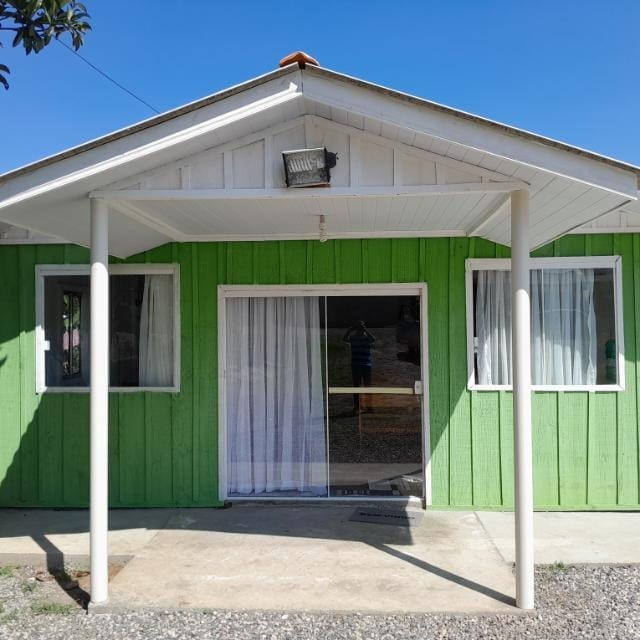

Jardim Industrial
Jardim Industrial

Endereço
Rua: Euclides Alves Pires N°140 - Jardim Industrial - Quatro Barras - PR
Datas 2026
-
FEVEREIRO
- 21 e 22 - Encontro do Círculo de Oração
- MARÇO
- 28 e 29 - Encontro das Crianças
- JUNHO
- 27 e 28 - Encontro de Jovens
Pastor Local
Ev. Clodair Taborda e Vanilda Taborda
Evangelistas
Ev. Alexandre Crotti
Ev. Dirceu Taborda Faria
Ev. Francisco Vicente
Presbíteros
Pb. Holilton
Pb. Marcelo Scheffer da Rocha
Diáconos
Dc. Oraci Morato Peniche
Dc. Sandro Luciano Schrammel
Cooperadores
Cp. Caio Oliveira Barbosa
Cp. Edilson Gomes Duarte
Cp. Irriquiel Xavier Cabral
Cp. Leonardo Faria Duarte